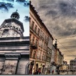
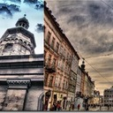

ВАРТІСТЬ: 130 ГРН
ТРИВАЛІСТЬ ЕКСКУРСІЇ: 40 ХВ.
Кава напій особливий. Східна мудрість говорить: пити каву — думати про життя…
Львів давно став столицею цього напою. І жоден мандрівник, який відвідує місто не може поїхати не скуштувавши запашної філіжанки кави. Історія кави у нашому місті сягає кінця XVIII століття. Саме в цей період почали з’являтись перші цукерні та кав’ярні. Спочатку кавою ласували заможні львів’яни, але з часом напій набув масової популярності . Були заклади, які відвідували тільки чоловіки, але напротивагу їм створювались вишукані цукерні, де збиралось багато жіноцтва. Кава у Львові пройшла довгу та цікаву історію. Зокрема під час Першої світової війни був дефіцит цукру. Влада прийняла рішення подавати каву без цукру для запобігання спекуляції, а ті кав’ярні які не дотримувались закону були оштрафовані. Після другої світової війни і приходом радянської влади, кав’ярні практично зникають з вулиць міста і з’являються аж після 60-х років. Поговорити за чашкою кави збирались у різні часи студенти, митці, політки, десиденти, друзі та закохані. І ми Вас запрошуємо на каву в одне з антуражніших і колоритних місць – кав’ярню “Вірменку”. Тут Ви відчуєте кавову атмосферу, скоштуєте справжню каву по-східному, скоштуєте десертні наливки зі Львова та цукерку авторської роботи.
Де і коли?
Вартість кавової дегустації, 4-х солодких лікерів та цукерки – 130 грн/ос.
ДЛЯ ЗАМОВЛЕННЯ ЕКСКУРСІЇ ДЗВОНІТЬ ЗА ТЕЛ: +38 (067) 243-26-26
Львів давно став столицею цього напою. І жоден мандрівник, який відвідує місто не може поїхати не скуштувавши запашної філіжанки кави. Історія кави у нашому місті сягає кінця XVIII століття. Саме в цей період почали з’являтись перші цукерні та кав’ярні. Спочатку кавою ласували заможні львів’яни, але з часом напій набув масової популярності . Були заклади, які відвідували тільки чоловіки, але напротивагу їм створювались вишукані цукерні, де збиралось багато жіноцтва. Кава у Львові пройшла довгу та цікаву історію. Зокрема під час Першої світової війни був дефіцит цукру. Влада прийняла рішення подавати каву без цукру для запобігання спекуляції, а ті кав’ярні які не дотримувались закону були оштрафовані. Після другої світової війни і приходом радянської влади, кав’ярні практично зникають з вулиць міста і з’являються аж після 60-х років. Поговорити за чашкою кави збирались у різні часи студенти, митці, політки, десиденти, друзі та закохані. І ми Вас запрошуємо на каву в одне з антуражніших і колоритних місць – кав’ярню “Вірменку”. Тут Ви відчуєте кавову атмосферу, скоштуєте справжню каву по-східному, скоштуєте десертні наливки зі Львова та цукерку авторської роботи.
Де і коли?
Вартість кавової дегустації, 4-х солодких лікерів та цукерки – 130 грн/ос.
ДЛЯ ЗАМОВЛЕННЯ ЕКСКУРСІЇ ДЗВОНІТЬ ЗА ТЕЛ: +38 (067) 243-26-26